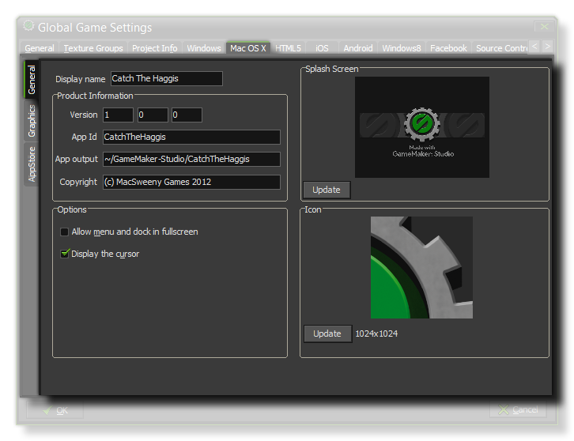
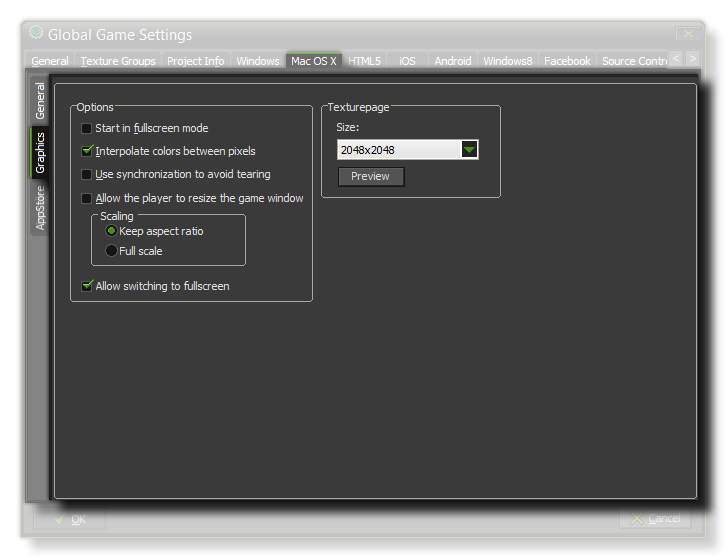
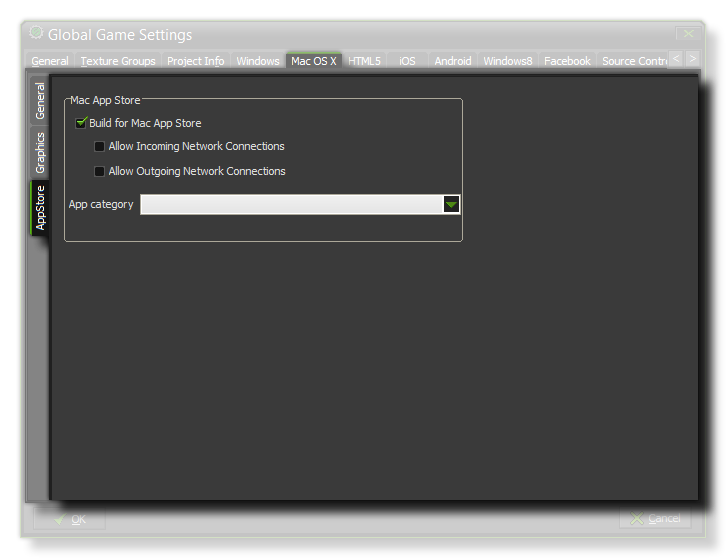

This MacOS tab is split into three separate sub-tabs (accessible on the left of the window) to make changing and updating the information for your game clearer and less complicated. These tabs are explained in the following sections.

The first thing to do is fill in the Display Name of your game then go down to the Product Information section and fill in its Version Number, App id, App Output file
and the Copyright details. Once that is done you will need to give your game Icons and a Splash Screen. The icons should be authored as a single *.png file with a size of 1024x1024px.
The splash screen should be the size of the first room in your game as this is what will briefly be shown while the game assets are being loaded. Smaller or larger images are permitted but will be scaled to fit.
Once you have configured the game details and presentation graphics, you should configure the two following options:
- Allow Menu and Dock in Fullscreen - When checked, this option will show the OS menu and dock if the game is in fullscreen mode.
- Display the Cursor - This toggles the mouse cursor visibility in your game.
 The graphics options will determine how your game is displayed when run and affect the way things like scaling and interpolation are handled. The following options exist:
- Start In Fullscreen Mode - If this is checked, the game will start in fullscreen mode.
- Interpolate Colors Between Pixels - Turns on interpolation, which basically "smooths" pixels. for crisp pixel graphics, it should be off, but if you have nice alpha blends and smoothed edge graphics it is better left on.
- Use Synchronization To Avoid Tearing - This toggles v-sync on or off. Note, that if you have a game with a roomspeed of 120 and the player has a monitor with a refresh rate of 60, turning this option on will lock your game speed to 60 too.
- Allow The Player To Resize The Game Window - Checking this permits the user to change the size of the game window.
- Scaling - Here you can choose to maintain aspect ratio (so a 4:3 room will be "letterboxed" on a 16:9) or to scale fully (stretching the image to fit the full screen).
- Allow Switching To Fullscreen - Checking this will allow the user to toggle the game from windowed to fullscreen mode using <CNTRL> + <CMD> + <F>.
Finally there is the option to set the size of the Texture Page. The default (and most compatible) size is 2048x2048, but you can choose from anywhere between 256x256 up to a
whopping 8192x8192! There is also a button marked View which will generate the texture pages for this platform and then open a window so that you can see how they look. This can be
very useful if you wish to see how the texture pages are structured and to prevent having texture pages larger (or smaller) than necessary.
NOTE : Be aware that the larger the size of the texture page, the less compatible your game will be.

If you wish the finished game to be App Store Ready then you need to check the Build for Mac App Store option, but be aware that this will only function if you are a registered Developer
and have the necessary certificates. Under that are two sub-options that you should only check if they are true as Apple can reject your app if they are checked when they are not needed or vice-versa.
These options simply permit your game to use the http_ and
url_ functions.
Finally, you need to select its App Category (for more information, see here).